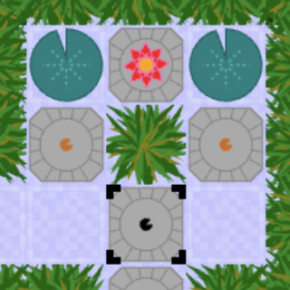
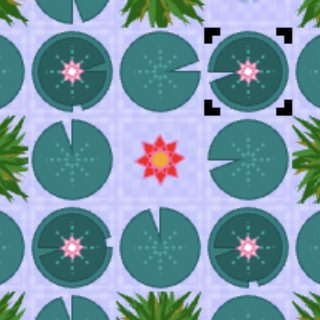
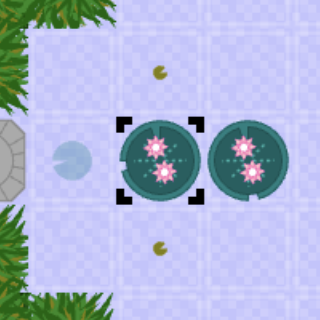
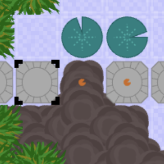
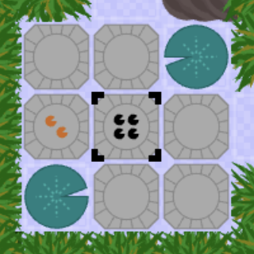
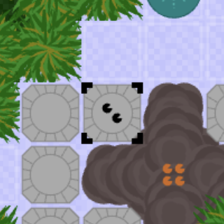
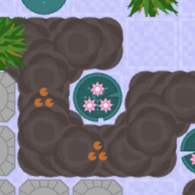
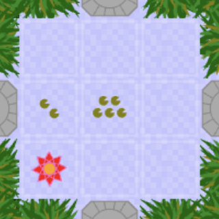

Lily-pond mechanics
This page describes the lily-pond mechanics in fine detail, garden by garden. Click on the section heading that you need help with. Do not read if you do not want spoilers!

Chapter 1: Mechanics
Chapter 1 introduces the primary core mechanic; the ability to collect seed-pods in-hand and throw them over water to grow temporary bridges of walkable lily-pads. For Chapter 1 you only need concern yourself with mastering how to safely navigate the water-garden optimising the use of the seed-pods you collect as you walk. Here is a list of the base mechanics:
- Collect seed-pods by walking across the stepping-stones.
- Throw seed-pods over water by stepping towards open water.
- Seed-pods thrown across water grow new lily-pads.
- You can walk across lily-pads but they sink after each step.
- Seed-pods that fall onto stepping-stones can be picked up again later.
- Seed-pods that fall into the weeds instantly perish.
Chapter 1: Strategy and hints
- Don't try collecting all the Andreana on the first pass.
- Avoid collecting more seed-pods than you can usefully use.
- If a lily-pad is blocking a throw then step on/off it to make it sink.
- Consider throwing seed-pods behind you to build a return path.

Chapter 2: Mechanics
Chapter 2 introduces several new facets of the core mechanic. The first is that seed-pods can be found on water (collectable if reachable) the second is that two or more lily-pads can co-exist in a stack, at the same location. The stack only sinks one lily-pad at a time making it strong enough to support multiple visits or additional actions. Stacked lily-pads also grow a flower, one for each lily-pad in the stack. The flowers are both a visual indicator of current height and a new element of the mechanic. As the stack shrinks the flowers die and in turn generate new seed-pods which are only revealed once the last lily-pad sinks. So now you can start to recycle those seed-pods, how useful might that be?
Chapter 2: Strategy and hints
- Look for the extra highlighting on a lily-pad to tell you there is a hidden seed-pod.
- You can grow a lily-pad over water-born seed-pods to hide them for later use.
- Collecting Andreana costs an action which may be useful if you are standing on a stack.
- As you circle the central area you will progressively need one more seed-pod in hand to progress.
- A row of single-flower lily-pads can be harvested as you walk. Step on/off the first lily-pad before moving forward and then pick-up each seed-pod revealed behind you, as you move forward.

Chapter 3: Mechanics
Chapter 3 builds directly on Chapter 2 offering trickier puzzles that require higher stacks of lily-pads (indicated by more flowers). Here you will discover the extra power of two, three or even more flowers. Two flowers, for example, will permit three actions (step, pickup, throw) without getting your feet wet, plus the bonus of two new seed-pods! The highlighting on a lily-pad only tells you seed-pods are present, not how many. So either keep count, or step on/off to reveal and then undo.
Historical note: Until mid-2025 gardens 2 and 3 were actually one garden. A first cut of garden 2 introduced all mechanics. Only as later gardens were developed did I discover more and more candidate puzzles that better suited garden 2. I ended up with more than enough puzzles that involved both short and tall stacks to justify rebuilding two gardens out of one. Post the V0.15 release (Sept 25) things continued in the same vein. As gardens 6/7/8 were developed and refined I ended up with yet more puzzles that involved taller stacks but no rule-of-five trigger event. I was drawn back to garden 3 multiple times, shifting puzzles in and out, and reworking different areas. Garden 3 thus stands as the most redeveloped garden since the Sept 25 release, and a testament to how the decision to "landscape" my puzzles into gardens helped supplement the puzzle collection in the later stages.
Chapter 3: Strategy and hints
- When counting potential resources count both seed-pods and pink-flowers.
- Look for efficient ways to walk a row of stacks and fully harvest the revealed seed-pods.
- A single seed-pod can be used in multiple ways to burn actions and clear stacks.
- Grow a lily-pad over an Andreana (and build a small stack beyond it) so you can harvest the Andreana by walking over it and then reaching back.

Chapter 4: Mechanics
Chapter 4 introduces mud-banks. Mud-banks are an obstacle that block your path but can also be used to store and redistribute seed-pods until you need them. Seed-pods on mud can be collected by reaching towards them, just like water-born seed-pods. It won't take long to discover seed-pods can be thrown over mud enabling them to be scattered and regrouped in powerful new ways. Just remember to bring your wellies.
Historical note: I never expected mud to be the last environmental element I would introduce. I thought mud would make its entrance relatively early and then I planned rock, to allow seed-pods to bounce around a corner. However mud proved so much more powerful than I anticipated, especially when I started exploring the various rules-of-five edge-cases, thus the plan to introduce rock stayed permanently on the backlog. Only post the Sept 25 release did it dawn on me that rock would have been so much elegant than mud (as a garden feature) and could easily have served the same role. Sadly my gardens will never win an award for beauty.
Chapter 4: Strategy and hints
- Use mud-banks to fragment available resources as much as possible.
- Consider the benefits of all possible throws over mud before any other action.
- Narrow mud-banks make it easy to grow new configurations of lily-pads on the other side.
- Repeatedly depositing a seed-pod on mud can help sink a stack in order to harvest new seed-pods.

Chapter 5: Mechanics
Chapter 5 introduces the first rule-of-five edge-mechanic. If you attempt to pick-up more than five seed-pods you immediately drop (or spill) four of them into adjacent locations. This mechanic may help or hinder progress but it definitely means you can never grow a row of six or more lily-pads with a single throw. Seed-pods that spill onto water grow a new lily-pad (as if thrown) and seed-pods that spill into weeds instantly perish, so think careful where and when to trigger this effect.
Historical note: In the earliest draft of this game there were no rules for dealing with 6 or more seed-pods. Try to pick up more and you discover a blunt hard limit of 5. I actually developed a small collection of puzzles that explored this primitive edge-case, but almost all of them of then were ultimately broken as the mechanics developed.
Chapter 5: Strategy and hints
- Spill into weeds is sometimes unavoidable.
- Access to 6 or more seed-pods is now highly likely, so look for different ways to use them.
- Spot the locations that allow you to trigger spill with no loss of resource.
- Don't exhaust a stack too soon. Use spill to top it up if you plan to use it again.
- Multiple spills in an open area can incrementally shift resources where you need them.

Chapter 6: Mechanics
Chapter 6 digs deeper into the rule-of-five edge-mechanic. Puzzles in this garden all offer the potential for "overloading" a distant location with five or more seed-pods, resulting in a redistribution of remote resources and the distinct possibility of chain-reactions that ripple across the landscape. Note that overload triggers at 5, whereas spill triggers at 6. The puzzles here-on increasingly require a mix of old and new knowledge. The clever new trick you've just discovered might prove useful again, or might be exactly the thing you need to avoid.
Chapter 6: Strategy and hints
- If you can overload with no loss of resource you can do it repeatedly.
- Overload can help grow a path of lily-pads that snake around a corner.
- During a chain-reaction each overload event is fully resolved before the next one triggers.
- Puzzles involving overload are more likely to result in a trail of unused/unreachable resources.

Chapter 7: Mechanics
Chapter 7 explore the next (and perhaps most surprising) rule-of-five edge-case. What happens when a stack of five lily-pads collapse? This is clearly quite distinct from a collection of five seed-pods, since the lily-pads are still intact and the flowers haven't yet matured into new seed-pods. Suffice to say, as the stack collapses lily-pads "flop" in all directions, possibly onto a solid surface. Here they don't sink and don't perish. New routes forward can open up but there is a high price to pay, the collapse destroys four flowers and thus the potential of four new seed-pods.
Chapter 7: Strategy and hints
- Relocate seed-pods away from a high-stack before triggering a collapse.
- An indirect collapse, triggered by a spill or overload event, can help minimise seed-pod loss.
- If you can physically reach a high-stack then consider harvesting it instead.
- For the final collapse you must throw from two different positions.

Chapter 8: Mechanics
This final garden explores two remaining edge-cases that are not directly related but complement each other nicely. The first is that chain-reactions can have a convenient side-effect of rescuing you when you would otherwise sink (just hold your breathe and wait for a lily-pad to grow!). The second is that overloaded stacks (of five or more of anything) are inherently stable, as long as they are left undisturbed. Wander close-by however and your footsteps are enough to make it wobble and collapse. Building you own stable stack-of-five is fundamentally impossible because adding anything to a pre-existing stack will always cause a small wobble event. And yet, there is always a special case to break a rule...
Lurking at the corner of the puzzle-space is one rule-of-five edge case that hasn't yet been explored, the possibility of a hidden stash of five seed-pods covered by a lily-pad. To be fair, this is not something that crops up naturally in the garden, no puzzle starts in this state (I made it a rule all resources would start visible and countable) but there's nothing to stop you building your own hidden stash and pushing it up to five or beyond. Maybe you've already tried this? If so you already know the collection is surprisingly stable, shielded by its lily-pads. And when exactly should a shielded collection collapse? Not until final reveal - is the logical answer.
Chapter 8: Strategy and hints
- If you want to deliberately step onto water you must do it empty-handed.
- If rescue is the goal then consider what the final event should be and plan backwards.
- Grow a new lily-pad (plus flower) over 4 seed-pods to guarantee a rescue when you finally exhaust the stack.
- Don't waste excess seed-pods, instead leave them somewhere where they will be reachable later.
- The Andreana closest to the exit is the third one to collect.
page content - © Andrea Gilbert - 2026